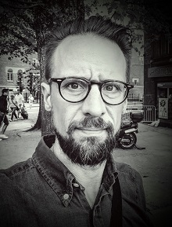

I am a Senior Lecturer and Docent in Logic.
I completed my PhD in Mathematics in 2004 at the University of Birmingham and Chalmers University of Technology. My dissertation, supervised by Richard W. Kaye, focused on mathematical logic, in particular on models of Peano arithmetic.
Following my doctoral studies, I held a position as Senior Lecturer in Mathematics at Mid Sweden University in Sundsvall. In 2006, I joined the University of Gothenburg, where I have since been active in research, teaching, and academic leadership. From 2016 to 2021, I served as Head of the Department of Philosophy, Linguistics and Theory of Science. Since 2023, I have held the role of Deputy Dean of the Faculty of Humanities.
Papers
- The propositional logic of teams (with O. Lorimer Olsson) arXiv:2303.14022, 2023 [pdf]
- Generalized quantifiers using team semantics arXiv:2404.17295, 2024 [pdf]
- Cognitively adequate complexity of reasoning in a description logic (with J. T. Fokkens) In Proceedings of the 2nd International Workshop on Cognitive Aspects of Knowledge Representation, CEUR Workshop Proceedings, Vol. 3548, 2023 [pdf]
- Invariance and Definability, with and without equality (with D. Bonnay) Notre Dame Journal of Formal Logic, Volume 59, Number 1 (2018), 109-133 [doi | pdf]
- Dependence logic with generalized quantifiers: Axiomatizations (with J. Kontinen and J. Väänänen) Journal of Computer and System Sciences, Volume 88, Pages 90-102, 2017 [doi].
- Implicitly definable generalized quantifiers In Idées Fixes. A Festschrift Dedicated to Christian Bennet on the Occasion of His 60th Birthday [pdf]
- Generating Comprehensible Explanations in Description (with A. R. Nizamani and C. Strannegård) 27th International Workshop on Description Logics. Vienna, Austria, July 17-20, 2014, Vol-1193 s. 530-542 [pdf]
- Symbolic Reasoning with Bounded Cognitive Resources (with A. R. Nizamani, C. Strannegård, and O. Häggström) 36th Annual Conference of the Cognitive Science Society [pdf]
- Dependence logic with generalized quantifiers: Axiomatizations (with J. Kontinen and J. Väänänen) In Proceedings of WoLLIC 2013 [doi | pdf | Proceedings version]
- Bounded Kolmogorov Complexity Based on Cognitive Models (with C. Strannegård, A. R. Nizamani, A. Sjöberg) In Proceedings of AGI, 2013 [doi | pdf]
- Reasoning about truth in first-order logic (with C. Strannegård, A. R. Nizamani, and L. Rips) Journal of Logic, Language and Information, Volume 22, Issue 1, pp 115-137, 2013 [doi | pdf]
- Characterizing quantifier extensions of dependence logic (with J. Kontinen) Journal of Symbolic Logic vol 78, no 1, pp. 307-316, 2013 [doi | pdf]
- Generalized quantifiers in dependence logic. Journal of Logic, Language and Information vol 21, pp. 299-324, 2012 [doi | pdf]
- Transplendent models: Expansions omitting a type (with Richard W. Kaye) Notre Dame Journal of Formal Logic, vol. 53, no 3, pp. 423-438, 2012 [doi | pdf]
- Non-isomorphism invariant Borel quantifiers (with Philipp Schlicht) Proc. of the AMS vol 139, no 12 [doi | pdf]
- A note on standard systems and ultrafilters. Journal of Symbolic Logic, vol 73, no 3, pages 824-830 [doi | pdf]
- Doctoral thesis: Expansions, omitting types, and standard systems [pdf]
- Licentiate thesis: Satisfaction classes in nonstandard models of first-order arithmetic [pdf]
Presentations
- Substitutional Logics of Teams (Helsinki Workshop, 2026-04-22) [pdf]
- Sanning och konsekvens: En logikers perspektiv (Göteborgs universitet, 2026-04-19) [pdf]
- Team semantics and substitutionality (Nordic Online Logic seminar, 2025-01-27) [pdf]
- The propositional logic of teams (Dagstuhl 2024, 2024-03-13) [pdf]
- Foundational aspects on team semantics (Nordic Congress of Mathematicians, Espoo, 2022-08-21) [pdf]
- Vad datorer (och vi?) inte kan svara på (with Martin Kaså) (Vetenskapsfestivalen 2022) [pdf]
- Vad en dator inte kan (och vad den kan dåligt) (Schillerska kulturdag, 2021-12-13) [pdf]
- An alternative approach to Dependence Logic (Filosofidagarna 2022, Lund, 2022-06-12) [pdf]
- Foundations of Team Semantics (Logic Colloquium 2022, Reykjavik, 2022-06-29) [pdf]
- Foundational principles of team semantics (Logic seminar 2021, Gothenburg, 2021-10-29) [pdf]
- Dependence logic and generalized quantifiers (Logic seminar 2020, Gothenburg, 2020-05-08) [pdf]
- Generalized quantifiers and team semantics (Workshop on Logic and Algorithms in Computational Linguistics 2017, Stockholm, 2017-08-16) [pdf]
- Team semantics for logics with generalized quantifiers (Logic seminar, Göteborg, 2017-04-21) [pdf]
- A maximal semantics for Dependence logic (Logic Colloquium 2015, Helsinki, 2015-08-04) [pdf]
- Dependence Logic and Generalized Quantifiers (Logics for Dependence and Independence, Dagstuhl, 2015-06-26) [pdf]
- Implicitly definable generalized quantifiers (Filosofidagarna 2015, Linköping, 2015-06-13) [pdf]
- Implicit definability as a criterion for logicality (Logic seminar, Göteborg, 2014-03-14) [pdf]
- Description logics and explanations (Human reasoning seminar in Gothenburg, 2013-11-08) [html]
- Dependence and Axiomatizations (Logic seminar in Gothenburg, 2013-09-27) [pdf]
- Dependence logic with generalized quantifiers: Axiomatizations (WoLLIC, Darmstadt, 2013-08-21) [pdf]
- On logic and dependence (Swedish Congress of Philosophy, Stockholm, 2013-06-16) [pdf]
- On logicality, invariance, and definability (Intensionality in Mathematics, Lund, 2013-05-12) [pdf]
- Models of arithmetic, standardness and expansions (Helsinki logic seminar, 2013-03-06) [pdf]
- On Logicality (Gothenburg-Oslo Workshop on Philosophical Logic, Oslo, 2012-12-01) [pdf]
- On logicality, invariance and definability (Logic seminar in Gothenburg, 2012-11-16)
- What is logic? On logicality, invariance and definability (Uppsala Logic Seminar, 2012-11-15)
- Invariance and definability, with or without equality (Scandinavian Logic Symposium 2012, Roskilde, 2012-08-20) [pdf]
- Dependence logic with generalized quantifiers (Logic Colloquium 2012, Manchester) [pdf]
- Branching quantifiers, compositionally (Logic seminar Helsinki, 2012-01-11) [pdf]
- Logical constants as uniquely definable quantifiers (Logic seminar Göteborg, 2011-09-30) [pdf]
- Dependence in logic (ESSLLI, Ljubljana, 2011-08-07) [pdf]
- Dependence in Logic (Filosofidagarna, Göteborg, 2011-06-12) [pdf]
- Multivalued dependencies and generalized quantifiers (LINT Workshop, Oxford, 2011-04-03) [pdf]
- Generalized quantifiers in dependence logic (Logikseminariet, Göteborg, 2011-02-04) [pdf]
- Non permutation invariant Borel quantifiers (Workshop on Logic, Language and Computation & The 9th International Conference on Logic and Cognition, Guangzhou, China, 2010-12-05) [pdf]
- Classification problems and models of arithmetic (Logikseminariet, Göteborg, 2010-10-08) [pdf]
- Borel Quantifiers (Logikseminariet, Göteborg, 2010-05-01) [pdf]
- Dependence and logicality (Logic and Language Technology seminar, Göteborg, 2010-04-16) [pdf]
- Logical constants: Invariance and definability (Institut Mittag-Leffler, Djursholm, 2009-10-22) [pdf]
- Generalized quantifiers in dependence logic (Logikseminariet, Göteborg, 2009-03-27) [pdf]
- Is dependence logical? (Amsterdam, 2008-12-06) [pdf]
- Spel och tal (Mittuniversitetet, Sundsvall, 2007-11-01) [pdf]
- Transplendent models: Omitting types in expansions (Models and interpretations, Utrecht, 2007-04-04) [pdf]
- Världens största tal (Filosofiska föreningen, Göteborg, 2007-03-21) [pdf]
- Ickestandardanalys - ett didaktiskt knep? (Matematikbiennalen 2006, Malmö, 2006-01-27) [pdf]
- Expansions omitting a type (New York City Logic Conference, New York, 2005-05-21) [pdf]
- Variations on replendency and recursive saturation (New York Graduate Student Logic Conference, New York, 2004-10-20) [pdf]
- Notions of resplendency for logics stronger than first-order logic (Logic Colloquium 2004, Torino, 2004-07-27) [pdf]
- A notion of recursive saturation for models of arithmetic with the standard predicate (M.ARI.AN. 2004, Pisa, 2004-06-25) [pdf]
- Omitting types in expansions and related strong saturation properties (Logic Colloquium 2003, Helsinki, 2003-08-15) [pdf]
- Satisfaction classes in nonstandard models of first-order arithmetic (Licentiate Seminar in Chalmers, Göteborg, 2002-09-24) [pdf]
- Resplendency and omitting types (British Logic Colloquium 2002 in Birmingham, 2002-09-13) [pdf]
- Satisfaction classes or How to define truth in a non-standard world (Logic seminar at the philosophy department, 2001-11-06) [pdf]
Other stuff
- A small english-swedish mathematical dictionary (originally by Anders Vretblad, Uppsala) [pdf]